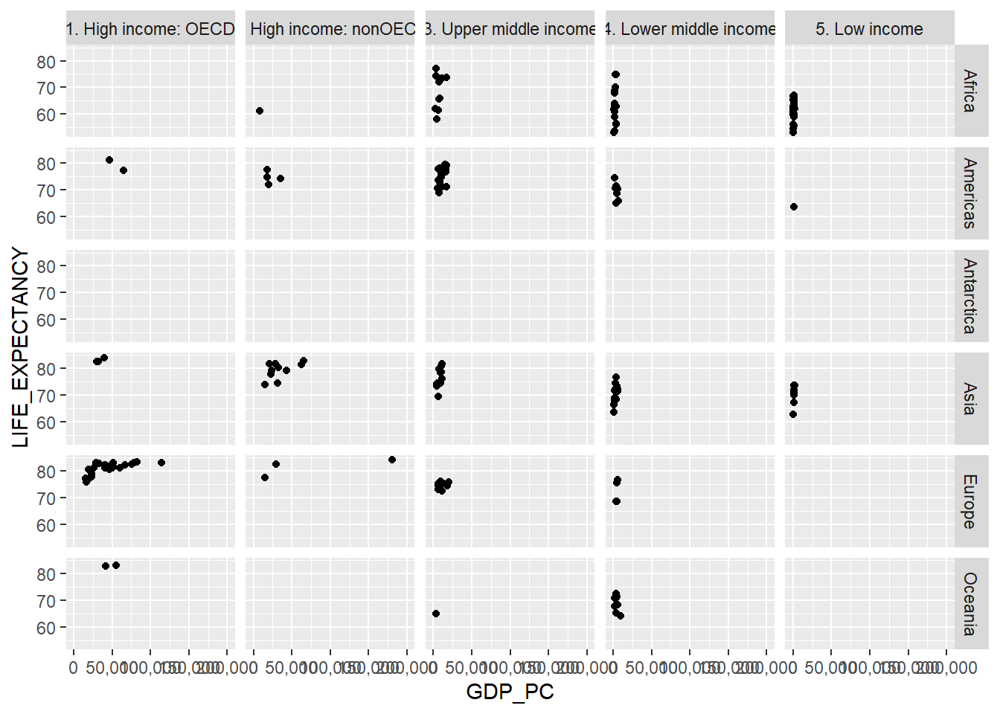
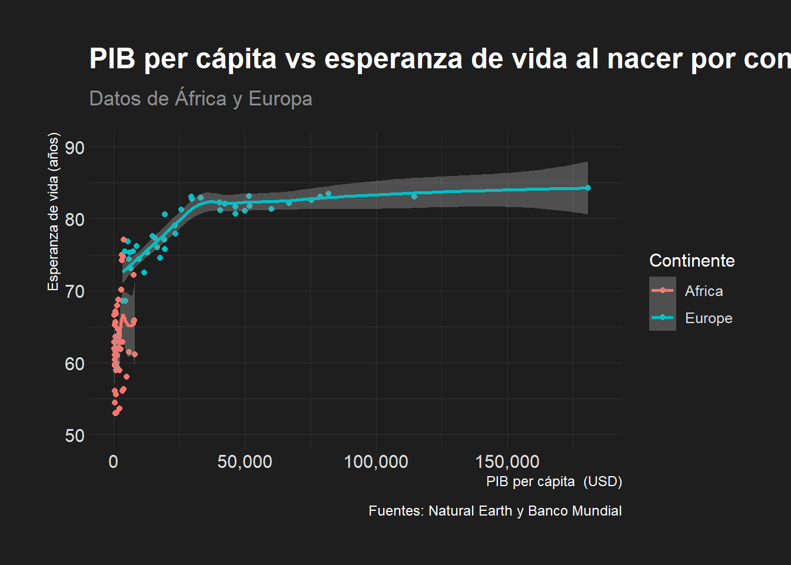
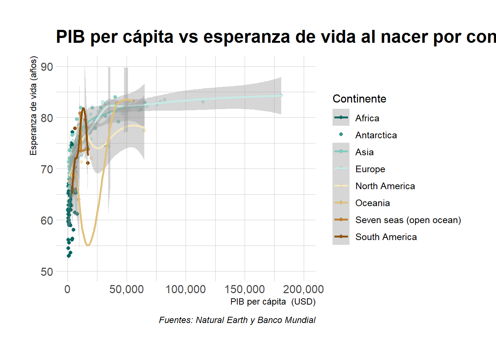
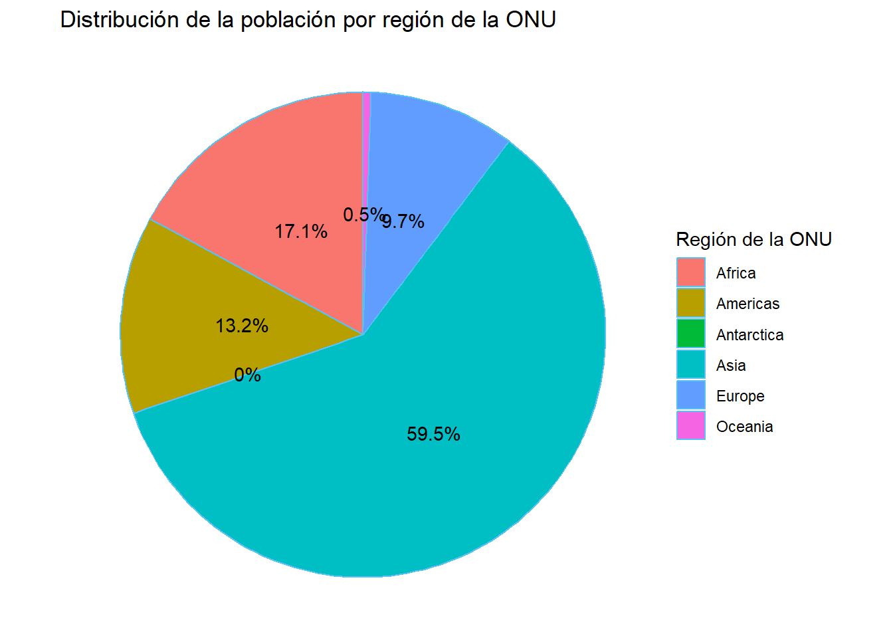

library(tidyverse)
library(plotly)
library(DT)
library(scales)
library(palmerpenguins)
library(ggthemes)
library(hrbrthemes)Graficación en ggplot2 y plotly
Carga de bibliotecas
Carga de datos
# Carga de los datos de países
paises <- read_csv(
"https://raw.githubusercontent.com/pf0953-programacionr/2024-ii/refs/heads/main/datos/natural-earth/paises-join-esperanzavida.csv"
)paises |>
arrange(NAME) |>
datatable(
options = list(
pageLenght = 10,
language = list(url = '//cdn.datatables.net/plug-ins/1.10.11/i18n/Spanish.json')
)
)Gráficos con ggplot2
Gráficos básicos
Gráficos de dispersión de PIB per cápita vs esperanza de vida al nacer
# Gráfico de dispersión de PIB per cápita vs esperanza de vida al nacer
paises |>
ggplot(aes(x = GDP_PC, y = LIFE_EXPECTANCY)) +
geom_point() +
scale_x_continuous(labels = comma, limits = c(0, NA))
# Gráfico de dispersión de PIB per cápita vs esperanza de vida al nacer
paises |>
ggplot(aes(x = GDP_PC, y = LIFE_EXPECTANCY, color = INCOME_GRP)) +
geom_point() +
scale_x_continuous(labels = comma, limits = c(0, NA))
# Gráfico de dispersión de PIB per cápita vs esperanza de vida al nacer
paises |>
ggplot(aes(x = GDP_PC, y = LIFE_EXPECTANCY, shape = CONTINENT)) +
geom_point() +
scale_x_continuous(labels = comma, limits = c(0, NA))
# Gráfico de dispersión de PIB per cápita vs esperanza de vida al nacer
# con formas y colores correspondientes al continente
paises |>
ggplot(aes(x = GDP_PC, y = LIFE_EXPECTANCY, shape = CONTINENT, color = CONTINENT)) +
geom_point() +
scale_x_continuous(labels = comma, limits = c(0, NA)) +
scale_color_manual(values = c("red", "blue", "green", "purple", "orange", "brown", "pink", "yellow"))
# Gráfico de dispersión de PIB per cápita vs esperanza de vida al nacer
# con tamaño de puntos correspondiente a la población
paises |>
ggplot(aes(x = GDP_PC, y = LIFE_EXPECTANCY, size = POP_EST, color = CONTINENT)) +
geom_point() +
scale_size_continuous(labels = comma) +
scale_x_continuous(labels = comma, limits = c(0, NA))
# Gráfico de dispersión de PIB per cápita vs esperanza de vida al nacer
# + curva de tendencia
paises |>
ggplot(aes(x = GDP_PC, y = LIFE_EXPECTANCY)) +
geom_point() +
geom_smooth(method = 'loess', se = TRUE) +
scale_x_continuous(labels = comma, limits = c(0, NA))
# Gráfico de dispersión de PIB per cápita vs esperanza de vida al nacer
# en África y Europa coloreado por continente
# + curva de tendencia
paises |>
filter(CONTINENT == 'Africa' | CONTINENT == 'Europe') |>
ggplot(aes(x = GDP_PC, y = LIFE_EXPECTANCY, color = CONTINENT)) +
# geom_point() +
geom_smooth() +
scale_x_continuous(labels = comma, limits = c(0, NA)) +
scale_y_continuous(labels = comma, limits = c(50, 90))
penguins |>
ggplot(aes(x = body_mass_g, y = bill_length_mm, color = island, size = flipper_length_mm)) +
geom_point()
Facets
# Gráfico de dispersión de PIB per cápita vs esperanza de vida al nacer
# + paneles por continente
paises |>
ggplot(aes(x = GDP_PC, y = LIFE_EXPECTANCY)) +
geom_point() +
facet_wrap(~ INCOME_GRP, ncol = 2) +
scale_x_continuous(labels = comma, limits = c(0, NA))
# Gráfico de dispersión de PIB per cápita vs esperanza de vida al nacer
# + paneles por región y subregión de la ONU
paises |>
ggplot(aes(x = GDP_PC, y = LIFE_EXPECTANCY)) +
geom_point() +
facet_grid(REGION_UN ~ INCOME_GRP) +
scale_x_continuous(labels = comma, limits = c(0, NA))Warning: Removed 11 rows containing missing values or values outside the scale range
(`geom_point()`).
Títulos, sutítulos y etiquetas
# Gráfico de dispersión de PIB per cápita vs esperanza de vida al nacer
# en África y Europa coloreado por continente
# + curva de tendencia
paises |>
filter(CONTINENT == 'Africa' | CONTINENT == 'Europe') |>
ggplot(aes(x = GDP_PC, y = LIFE_EXPECTANCY, color = CONTINENT)) +
geom_point() +
geom_smooth() +
scale_x_continuous(labels = comma, limits = c(0, NA)) +
scale_y_continuous(labels = comma, limits = c(50, 90)) +
ggtitle("PIB per cápita vs esperanza de vida al nacer por continente") +
xlab("PIB per cápita (USD)") +
ylab("Esperanza de vida (años)") +
labs(subtitle = "Datos de África y Europa",
caption = "Fuentes: Natural Earth y Banco Mundial",
color = "Continente") +
theme_modern_rc()
Colores
# Gráfico de dispersión de PIB per cápita vs esperanza de vida al nacer
# coloreado por continente
paises |>
ggplot(aes(x = GDP_PC, y = LIFE_EXPECTANCY, color = CONTINENT)) +
geom_point() +
geom_smooth() +
scale_x_continuous(labels = comma, limits = c(0, NA)) +
scale_y_continuous(labels = comma, limits = c(50, 90)) +
ggtitle("PIB per cápita vs esperanza de vida al nacer por continente") +
xlab("PIB per cápita (USD)") +
ylab("Esperanza de vida (años)") +
labs(caption = "Fuentes: Natural Earth y Banco Mundial",
color = "Continente") +
scale_colour_brewer(palette = "BrBG", direction = -1) +
theme_ipsum() # estilo de hrbrthemes`geom_smooth()` using method = 'loess' and formula = 'y ~ x'Warning: Removed 11 rows containing non-finite outside the scale range
(`stat_smooth()`).Warning in simpleLoess(y, x, w, span, degree = degree, parametric = parametric,
: span too small. fewer data values than degrees of freedom.Warning in simpleLoess(y, x, w, span, degree = degree, parametric = parametric,
: pseudoinverse used at 10592Warning in simpleLoess(y, x, w, span, degree = degree, parametric = parametric,
: neighborhood radius 506.81Warning in simpleLoess(y, x, w, span, degree = degree, parametric = parametric,
: reciprocal condition number 0Warning in simpleLoess(y, x, w, span, degree = degree, parametric = parametric,
: There are other near singularities as well. 4.0698e+07Warning in predLoess(object$y, object$x, newx = if (is.null(newdata)) object$x
else if (is.data.frame(newdata))
as.matrix(model.frame(delete.response(terms(object)), : span too small. fewer
data values than degrees of freedom.Warning in predLoess(object$y, object$x, newx = if (is.null(newdata)) object$x
else if (is.data.frame(newdata))
as.matrix(model.frame(delete.response(terms(object)), : pseudoinverse used at
10592Warning in predLoess(object$y, object$x, newx = if (is.null(newdata)) object$x
else if (is.data.frame(newdata))
as.matrix(model.frame(delete.response(terms(object)), : neighborhood radius
506.81Warning in predLoess(object$y, object$x, newx = if (is.null(newdata)) object$x
else if (is.data.frame(newdata))
as.matrix(model.frame(delete.response(terms(object)), : reciprocal condition
number 0Warning in predLoess(object$y, object$x, newx = if (is.null(newdata)) object$x
else if (is.data.frame(newdata))
as.matrix(model.frame(delete.response(terms(object)), : There are other near
singularities as well. 4.0698e+07Warning: Removed 11 rows containing missing values or values outside the scale range
(`geom_point()`).Warning in max(ids, na.rm = TRUE): ningun argumento finito para max; retornando
-InfWarning in grid.Call(C_stringMetric, as.graphicsAnnot(x$label)): font family
not found in Windows font database
Warning in grid.Call(C_stringMetric, as.graphicsAnnot(x$label)): font family
not found in Windows font database
Warning in grid.Call(C_stringMetric, as.graphicsAnnot(x$label)): font family
not found in Windows font databaseWarning in grid.Call(C_textBounds, as.graphicsAnnot(x$label), x$x, x$y, : font
family not found in Windows font databaseWarning in grid.Call(C_stringMetric, as.graphicsAnnot(x$label)): font family
not found in Windows font databaseWarning in grid.Call(C_textBounds, as.graphicsAnnot(x$label), x$x, x$y, : font
family not found in Windows font database
Warning in grid.Call(C_textBounds, as.graphicsAnnot(x$label), x$x, x$y, : font
family not found in Windows font database
Warning in grid.Call(C_textBounds, as.graphicsAnnot(x$label), x$x, x$y, : font
family not found in Windows font database
Warning in grid.Call(C_textBounds, as.graphicsAnnot(x$label), x$x, x$y, : font
family not found in Windows font databaseWarning in grid.Call.graphics(C_text, as.graphicsAnnot(x$label), x$x, x$y, :
font family not found in Windows font database
Warning in grid.Call.graphics(C_text, as.graphicsAnnot(x$label), x$x, x$y, :
font family not found in Windows font database
Warning in grid.Call.graphics(C_text, as.graphicsAnnot(x$label), x$x, x$y, :
font family not found in Windows font database
Warning in grid.Call.graphics(C_text, as.graphicsAnnot(x$label), x$x, x$y, :
font family not found in Windows font database
Warning in grid.Call.graphics(C_text, as.graphicsAnnot(x$label), x$x, x$y, :
font family not found in Windows font database
Warning in grid.Call.graphics(C_text, as.graphicsAnnot(x$label), x$x, x$y, :
font family not found in Windows font database
Warning in grid.Call.graphics(C_text, as.graphicsAnnot(x$label), x$x, x$y, :
font family not found in Windows font database
plotly
# Gráfico de dispersión de PIB per cápita vs esperanza de vida al nacer
grafico_ggplot2 <-
paises |>
ggplot(aes(x = GDP_PC, y = LIFE_EXPECTANCY, color = CONTINENT)) +
geom_point(aes(
# datos que se muestran al colocar el ratón sobre un punto
text = paste0(
"País: ", NAME, "\n",
"PIB per cápita: ", GDP_PC, "\n",
"Esperanza de vida: ", LIFE_EXPECTANCY
)
)) +
scale_x_continuous(labels = comma, limits = c(0, NA)) +
scale_y_continuous(labels = comma, limits = c(50, 90)) +
ggtitle("PIB per cápita vs esperanza de vida al nacer por continente") +
xlab("PIB per cápita (USD)") +
ylab("Esperanza de vida (años)") +
labs(caption = "Fuentes: Natural Earth y Banco Mundial",
color = "Continente") +
theme_ipsum() # estilo de hrbrthemes
# Gráfico plotly
ggplotly(grafico_ggplot2, tooltip = "text") |>
config(locale = 'es') # para mostrar los controles en españolTipos de gráficos
Histogramas
# Histograma ggplot2 de distribución del PIB per cápita
histograma_ggplot2 <-
paises |>
ggplot(aes(x = POP_EST)) +
geom_histogram(
aes(
text = paste0(
"PIB per cápita (valor medio del rango): $", round(after_stat(x), 2), "\n",
"Frecuencia: ", after_stat(count)
)
),
bins = 10
) +
#scale_x_continuous(labels = comma, limits = c(0, NA)) +
#coord_cartesian(ylim = c(0, 40)) +
ggtitle("Distribución del PIB per cápita") +
xlab("PIB per cápita ($ EE.UU.)") +
ylab("Frecuencia") +
labs(subtitle = "Datos de 201 países", caption = "Fuentes: Natural Earth y Banco Mundial") +
theme_economist()Warning in geom_histogram(aes(text = paste0("PIB per cápita (valor medio del
rango): $", : Ignoring unknown aesthetics: text# Histograma plotly
ggplotly(histograma_ggplot2, tooltip = "text") |>
config(locale = 'es')Gráficos de pastel
# Agrupar y resumir los datos
suma_poblacion_por_region <- paises |>
group_by(REGION_UN) |>
summarise(POP_TOTAL = sum(POP_EST))
# Calcular porcentajes
porcentaje_poblacion_por_region <- suma_poblacion_por_region |>
mutate(POP_PCT = round(POP_TOTAL / sum(POP_TOTAL) * 100, 1))
# Gráfico de pastel
grafico_pastel_ggplot2 <-
porcentaje_poblacion_por_region |>
ggplot(aes(x = "", y = POP_TOTAL, fill = REGION_UN)) +
geom_bar(width = 1, stat = "identity") +
coord_polar(theta = "y") +
geom_text(
aes(label = paste0(POP_PCT, "%")),
color = "black",
position = position_stack(vjust = 0.5) # para ajustar la posición del texto en cada porción
) +
labs(title = "Distribución de la población por región de la ONU",
x = NULL,
y = NULL,
fill = "Región de la ONU") +
theme_void()
# Despliegue del gráfico
grafico_pastel_ggplot2
Gráficos de barras
Con transformaciones estadísticas
# Gráfico de barras con promedio de esperanza de vida
# para cada región de la ONU
grafico_barras_ggplot2 <-
paises |>
ggplot(aes(x = fct_infreq(REGION_UN), y = LIFE_EXPECTANCY)) +
geom_bar(
stat = "summary",
fun.y = "mean",
aes(
text = paste0(
"Promedio de esperanza de vida: ", round(after_stat(y), 2)
)
)
) +
ggtitle("Promedio de esperanza de vida por región de la ONU") +
xlab("Región de la ONU") +
ylab("Promedio de esperanza de vida") +
labs(caption = "Fuente: ") +
theme_economist()
# Gráfico de barras plotly
ggplotly(grafico_barras_ggplot2, tooltip = "text") |>
config(locale = 'es')# Cálculo del promedio de esperanza de vida por región
promedio_esperanza_vida_por_region <-
paises |>
group_by(REGION_UN) |>
summarize(LIFE_EXPECTANCY_MEAN = mean(LIFE_EXPECTANCY, na.rm = TRUE))
# Despliegue por orden descendente del promedio de esperanza de vida
promedio_esperanza_vida_por_region |>
arrange(desc(LIFE_EXPECTANCY_MEAN))# A tibble: 6 × 2
REGION_UN LIFE_EXPECTANCY_MEAN
<chr> <dbl>
1 Europe 78.6
2 Asia 74.5
3 Americas 73.5
4 Oceania 71.0
5 Africa 63.1
6 Antarctica NaN # Gráfico de barras con promedio de esperanza de vida
# para cada región de la ONU
grafico_barras_ggplot2 <-
promedio_esperanza_vida_por_region |>
ggplot(aes(x = reorder(REGION_UN,-LIFE_EXPECTANCY_MEAN), y = LIFE_EXPECTANCY_MEAN)) +
geom_col(
aes(
text = paste0(
"Promedio de esperanza de vida: ", round(after_stat(y), 2)
)
)
) +
ggtitle("Promedio de esperanza de vida por región de la ONU") +
xlab("Región de la ONU") +
ylab("Promedio de esperanza de vida") +
labs(caption = "Fuente: Natural Earth") +
theme_economist()Warning in geom_col(aes(text = paste0("Promedio de esperanza de vida: ", :
Ignoring unknown aesthetics: text# Gráfico de barras plotly
ggplotly(grafico_barras_ggplot2, tooltip = "text") |>
config(locale = 'es')Sin transformaciones estadísticas
# Gráfico de barras con población de países
# de América
grafico_barras_ggplot2 <-
paises |>
filter(REGION_UN == "Oceania") |>
ggplot(aes(x = reorder(ADM0_ISO, -POP_EST), y = POP_EST/1000000)) +
geom_col(
aes(
text = paste0(
"País: ", NAME, "\n",
"Población (millones de habitantes): ", round(POP_EST/1000000, 2)
)
)
) +
scale_y_discrete(expand = expansion(mult = c(0.2, 0.2))) + # agrega un 20% de espacio al inicio y al final del eje y
# coord_flip() + # para mostrar barras horizontales
ggtitle("Población de países de América") +
xlab("País") +
ylab("Población (millones de habitantes)") +
labs(caption = "Fuente: Natural Earth")Warning in geom_col(aes(text = paste0("País: ", NAME, "\n", "Población
(millones de habitantes): ", : Ignoring unknown aesthetics: text# Gráfico de barras plotly
ggplotly(grafico_barras_ggplot2, tooltip = "text") |>
config(locale = 'es')Barras apiladas
# Gráfico de barras apiladas por región de la ONU y nivel de economía
grafico_barras_ggplot2 <-
paises |>
ggplot(aes(x = REGION_UN, fill = ECONOMY)) +
geom_bar() +
ggtitle("Cantidad de países por región de la ONU y nivel de economía") +
xlab("Región de la ONU") +
ylab("Cantidad de países") +
labs(fill = "Nivel de economía") +
theme_minimal()
# Gráfico de barras plotly
ggplotly(grafico_barras_ggplot2) |>
config(locale = 'es')Barras de proporciones
# Gráfico de barras apiladas por región de la ONU y nivel de economía
grafico_barras_ggplot2 <-
paises |>
ggplot(aes(x = REGION_UN, fill = ECONOMY)) +
geom_bar(position = "fill") +
ggtitle("Proporción de niveles de economía en regiones de la ONU") +
xlab("Región de la ONU") +
ylab("Proporción") +
labs(fill = "Nivel de economía") +
theme_minimal()
# Gráfico de barras plotly
ggplotly(grafico_barras_ggplot2) |>
config(locale = 'es')Barras agrupadas
# Gráfico de barras agrupadas por región de la ONU y nivel de economía
grafico_barras_ggplot2 <-
paises |>
ggplot(aes(x = REGION_UN, fill = ECONOMY)) +
geom_bar(position = "dodge") +
ggtitle("Cantidad de países por región de la ONU y nivel de economía") +
xlab("Región de la ONU") +
ylab("Cantidad de países") +
labs(fill = "Nivel de economía") +
theme_minimal()
# Gráfico de barras plotly
ggplotly(grafico_barras_ggplot2) |>
config(locale = 'es')